Tomasz z Celano w Żywocie pierwszym św. Franciszka tak go opisuje:
"Wzrostu był średniego, raczej niskiego. Głowę miał proporcjonalną i okrągłą, twarz nieco podłużną, czoło płaskie
i małe, oczy czarne, normalnej wielkości i pełne prostoty, włosy również czarne, brwi proste, nos proporcjonalny,
delikatny i prosty, uszy proste, ale małe, mowę łagodną, żywą i przenikającą, głos mocny i słodki, jasny i
dźwięczny, zęby złączone, równe i białe, wargi małe i delikatne, brodę czarną i rzadką, szyję delikatną, plecy
proste, ramiona krótkie, ręce drobne, place długie, paznokcie podłużne, nogi szczupłe i małe stopy, delikatną
skórę, ciała niewiele, odzienie szorstkie; spał bardzo krótko, miał hojną rękę. A ponieważ odznaczał się
najwyższa pokorą, okazywał każdemu człowiekowi wszelką łagodność, dostosowując się we właściwy sposób do
obyczajów wszystkich ludzi: wśród świętych jeszcze bardziej święty, wśród grzeszników jakby jeden z nich."
Temu freskowi warto poświęcić nieco więcej uwagi. Znajduje się on w klasztorze benedyktynów w Subiaco, Franciszek najprawdopodobniej odwiedził to miejsce w 1223 r. i to właśnie po tej wizycie, lub już po kanonizacji w 1228 r. ów fresk został namalowany (żeby zobaczyć powiększenie - kliknij na fotę). Autorem mógł być jeden z benedyktynów, który właśnie tak zapamiętał Franciszka, już wtedy cieszącego się opinią świętości. Charakterystyczne jest, że na tym wizerunku Święty nie ma stygmatów (co może wskazywać na fakt, że fresk powstał jeszcze za jego życia), oraz... dokonany przez papieża Piusa "akt wandalizmu", znajdujący się w prawym górnym rogu (na zdjęciu zaznaczony na czerwono). Podobno papież będąc w Subiaco postanowił właśnie tu złożyć swój autograf, zresztą w mało wyszukany sposób, zaczynając od "fuit hic" - "tu był". (zobacz z bliska)
Fragment ołtarza w Kaplicy stygmatów w La Verna
| 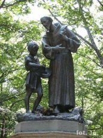 | 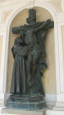 | Inne Franki z La Verna |
| 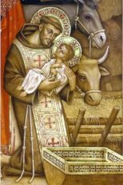 | Franciszek z Greccio |
| 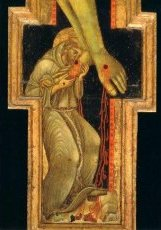 | Fragment ikony Ukrzyżowania z Carceri |
| 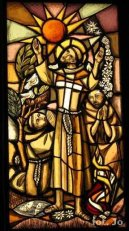 | 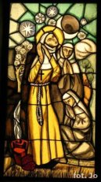 | Franek i Klara - witraże w San Damiano |
| 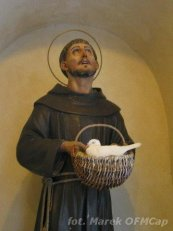 | Porziuncola - rzeźbiony Franulek z żywym gołębiem |
| 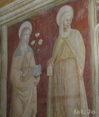 | Fresk przedstawiający św. Klarę - Porziuncola |
| 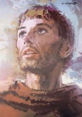 | Franciszek - Cesselon |
| 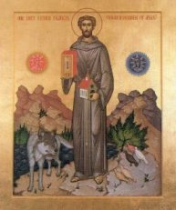 | Ikona. Franciszek jako ten, który odbudował Kościoł, wygłosił kazanie do ptaków i uspokoił wilka z Gubbio |
| 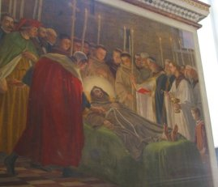 | Fresk przedstawiający śmierć św. Franciszka. Porziuncola. |
| 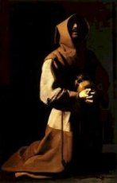 | Franciszek - Zurbaran |